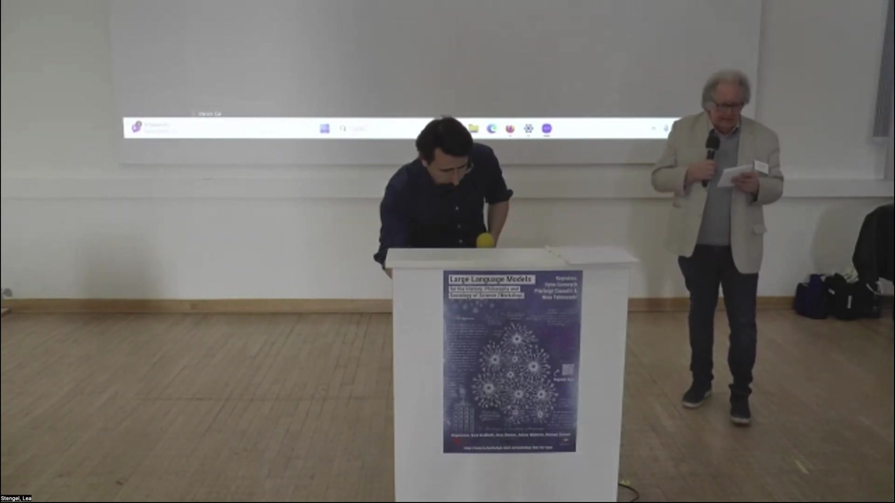
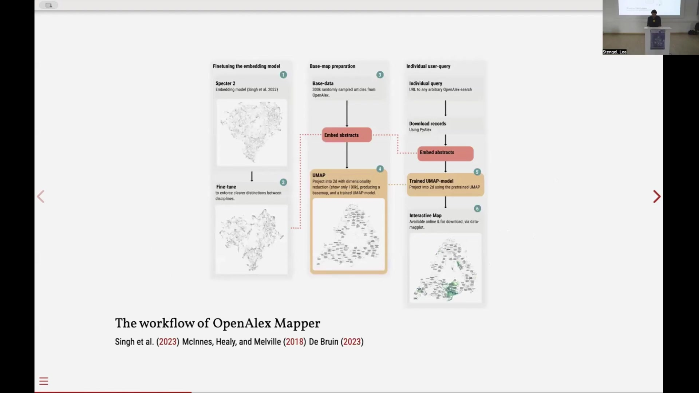
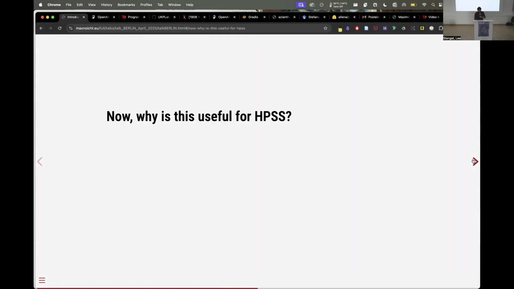
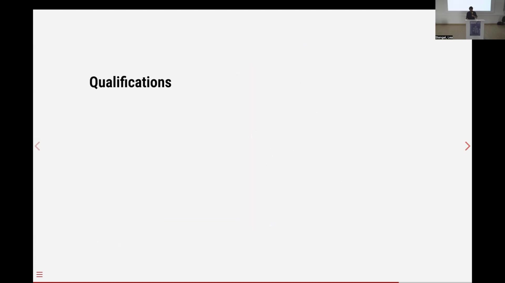

4 Philosophy at Scale: Introducing OpenAlex Mapper
Overview
Maximilian Neuchel, alongside Andrea Loetgers and Taya Knuuttila, unveiled OpenAlex Mapper, a novel tool designed to facilitate transdisciplinary investigations within the history, philosophy, and sociology of science (HPSS). The team, comprising researchers from Utrecht University and the University of Vienna, developed this instrument, funded by an ERC grant on ‘possible life’. Their presentation meticulously detailed the tool’s technical architecture, its operational workflow, and its diverse applications in scholarly analysis.
OpenAlex Mapper addresses the inherent challenges of generalising findings from small samples and case studies prevalent in HPSS research. It leverages a fine-tuned Specter 2 language model, specifically adapted to discern disciplinary boundaries, to process a vast dataset of 300,000 randomly sampled English-language abstracts from the OpenAlex database. Subsequently, the system employs Uniform Manifold Approximation and Projection (UMAP) to reduce these high-dimensional embeddings into a two-dimensional, interactive base map. Users can submit arbitrary queries to OpenAlex; the tool then embeds the retrieved abstracts and projects them onto this pre-existing map, revealing their disciplinary locations.
Crucially, OpenAlex Mapper supports qualitative, heuristic investigations by grounding them in extensive quantitative data, whilst always linking back to original textual sources. Demonstrations showcased its utility in mapping the distribution of model templates, such as the Ising, Hopfield, and Sherrington-Kirkpatrick models, across scientific fields. Furthermore, the tool effectively visualises the spread of key concepts, exemplified by ‘phase transition’ and ‘emergence’, and analyses the interdisciplinary adoption patterns of specific methods, including ‘Random Forest’ and ‘Logistic Regression’. The developers acknowledged certain limitations, notably OpenAlex’s data quality, the current English-only language model, the requirement for abstracts or robust titles, and the inherent stochasticity and dimensionality reduction trade-offs of the UMAP algorithm.
4.1 OpenAlex Mapper: Introduction and Technical Foundations

Maximilian Neuchel, Andrea Loetgers, and Taya Knuuttila introduced OpenAlex Mapper, a sophisticated tool they developed through collaborative research. Neuchel, a PhD candidate at Utrecht University’s Theoretical Philosophy Department, collaborated with Loetgers and Knuuttila from the University of Vienna’s Philosophy Department. An ERC grant, specifically supporting research on ‘possible life’, funded this endeavour.
Their presentation systematically unfolded, first elucidating the tool’s core functions and high-level technical specifications. Subsequently, a live demonstration illustrated its practical application, culminating in a detailed discussion of its utility within the History, Philosophy, and Sociology of Science (HPSS) domain.
A meticulously fine-tuned Specter 2 language model forms the heart of OpenAlex Mapper’s functionality. The team adapted this model, training it on a dataset of articles from closely related fields to enhance its capacity for discerning disciplinary boundaries and improve distinction. UMAP dimensionality reduction visually represents this training process. Crucially, these modifications represent minor adjustments to the language model, rather than a comprehensive retraining effort.
For base-map preparation, the team drew upon the extensive OpenAlex database. This resource, renowned for its size and inclusivity, surpasses proprietary databases such as Web of Science and Scopus. Its open data policy facilitates easy, batch-query access, making it an invaluable asset for large-scale scholarly analysis. From this vast repository, the authors sampled 300,000 random articles, selecting only those with well-formed English abstracts. The fine-tuned Specter 2 model then processed these abstracts, generating high-dimensional embeddings.
To render these complex embeddings visually interpretable, the system employs Uniform Manifold Approximation and Projection (UMAP). This dimensionality reduction algorithm transforms the high-dimensional data into a two-dimensional base map, simultaneously producing a trained UMAP model. Consequently, when users submit arbitrary queries through the OpenAlex search interface, the tool downloads the initial 1,000 records, embeds their abstracts using the same fine-tuned language model, and then projects these new embeddings onto the pre-existing 2D map via the trained UMAP model. This inherent feature of UMAP ensures consistent and accurate positioning of new documents within the established disciplinary landscape.
4.2 Interactive Demonstration and Core Problem Addressed

OpenAlex Mapper, accessible online at https://m7n-openalex-mapper.hf.space, offers an interactive platform for scholarly exploration. An alternative version, featuring a higher latency GPU setup, also accommodates larger, more demanding queries. Users initiate their investigations by inputting search terms, such as ‘scale-free network models’ or ‘coriander’, leveraging the comprehensive capabilities of the OpenAlex search interface.
Behind the scenes, the system efficiently downloads the initial 1,000 records corresponding to the user’s query, subsequently embedding their abstracts. Should the user enable the option, the tool also processes the citation graph, enriching the analytical output. The primary output manifests as an interactive projection of these search results onto a grey base map, visually indicating where specific terms, authors, or concepts appear across various disciplines. This interactive functionality empowers users to delve deeper, for instance, by investigating the presence of ‘coriander’ in epidemiology or public health literature. Moreover, the tool offers visualisations of temporal distributions and the overlay of citation graphs, providing multifaceted insights.
Fundamentally, OpenAlex Mapper addresses a critical challenge in the History, Philosophy, and Sociology of Science: the generalisation and validation of findings derived from small samples and case studies. It aims to answer nuanced questions regarding the adoption and prevalence of specific models, such as ‘Where did the Hopfield model truly establish itself?’. By employing rigorous quantitative methods, the tool provides a robust foundation for qualitative, heuristic investigations. Crucially, it maintains a direct link to the actual textual sources, ensuring that all findings remain traceable and verifiable.
4.3 Applications in Scholarly Analysis

The development of OpenAlex Mapper represents an ongoing research endeavour, with several compelling applications already emerging. Initially, Neuchel, Loetgers, and Knuuttila conceived the tool specifically for investigating model templates. This concept explores how models possessing similar structural properties manifest across disparate scientific disciplines, potentially imposing a structure on science that operates orthogonally to traditional disciplinary boundaries. For instance, the system has mapped the distribution of the Ising model (7,819 instances), the Hopfield model (589 instances), and the Sherrington-Kirkpatrick model (1,437 instances), revealing their presence in distinct, non-continuous regions across the base map. This work draws upon foundational ideas from Humphreys (2004) and Knuuttila and Loettgers (2023).
Beyond model templates, the tool effectively visualises the distribution of key concepts. A notable example contrasts the concept of ‘phase transition’ with ‘emergence’, depicted in orange on the map. This capability proves particularly advantageous for broadening conceptual analysis into interdisciplinary contexts, circumventing the common difficulties associated with acquiring specific, cross-disciplinary datasets. Relevant scholarship in this area includes contributions from Malaterre, Chartier, and Lareau (2020), and Zichert and Wüthrich (2024).
Furthermore, OpenAlex Mapper facilitates the analysis of method distribution across scientific fields. Examining the usage patterns of ‘Random Forest’ (2,000 instances) versus ‘Logistic Regression’ (1,997 instances) demonstrates clearly distinguishable patterns of adoption within interdisciplinary research. This observation prompts profound philosophical questions, such as why neuroscientists might favour Random Forest algorithms whilst researchers in psychiatry or mental health predominantly employ Logistic Regression. This application engages with discussions from Breiman (2001), Bzdok, Altman, and Krzywinski (2018), and Andrews (2023).
4.4 Limitations and Future Directions

Despite its considerable utility, OpenAlex Mapper operates with several acknowledged limitations. Foremost amongst these is the inherent quality of the OpenAlex database itself. Whilst not flawless, its data quality remains commendably reasonable when compared to alternative scholarly data sources.
A significant constraint currently stems from the language model’s scope: it processes English-language content exclusively. This naturally limits the tool’s overall reach; nevertheless, for investigations focusing on the more recent history of science, this presents a less severe impediment. The developers recognise the potential for future enhancement through the integration of multilingual models, though they note the current scarcity of robust, science-trained multilingual models.
Furthermore, the embedding process necessitates source data that includes either comprehensive abstracts or sufficiently descriptive titles. This requirement inherently restricts the range of documents the tool can effectively analyse.
Finally, the Uniform Manifold Approximation and Projection (UMAP) algorithm, central to the tool’s visualisation, introduces its own set of challenges. As a stochastic algorithm, UMAP generates one specific output from a multitude of possibilities, implying that alternative visualisations could emerge from repeated runs. Moreover, the algorithm must inevitably make trade-offs during dimensionality reduction. Compressing the Specter language model’s 768 dimensions into a mere two introduces unavoidable distortions, manifesting as ‘pushing, pulling, and misaligning’ of data points within the two-dimensional space.
For those seeking further information, the presentation slides remain accessible online at maxnoichl.eu/talk. Additionally, a comprehensive working paper, titled ‘Philosophy at Scale: Introducing OpenAlex Mapper’, provides more detailed technical explanations of the system’s architecture and methodology.